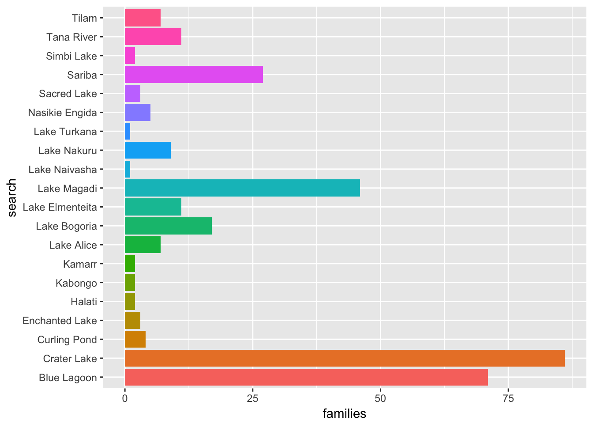

In this section we will focus on using the Geonames service to identify the coordinates for place names in Kenya. We will then take a subset of coordinates for Kenya using the example of lakes, ponds and lagoons. Finally, we will use leaflet to create interactive maps of the data and create a hyperlink to search the patent literature and other literature sources.
Our aim in this walk through is to produce this map as an interactive map that will allows the reader to zoom in, select a marker and look up patents and literature linked to lakes in Kenya.
By the end of this section you will be able to access geonames, filter the data down to the subjects you are interested in, and create an interactive hyperlinked map with leaflet.
Geonames is a deceptively simple service that provides free access to the coordinates and related information for 11 million places around the world. As such, it is the world’s biggest open access repository for coordinate data.
There are a variety of ways of obtaining information from geonames, including the geonames web service. If you only want to work on data from a specific country, one of the easiest ways to obtain the data is by downloading it from the country data dump.
As an alternative we can access the geonames service using the API through packages such as geonames in R. There are a wide variety of existing clients that are listed on the geonames client libraries page.
install.packages("geonames")To work with the geonames package you will need to sign up for a free account and take a note of your username or it will not work.
library(geonames)
options(geonamesUsername="yourid")To get started we need to find the Geoname Id for Kenya (KE)
library(geonames)
options(geonamesUsername="yourid")
GN_kenya <- GNcountryInfo("KE")head(GN_kenya)## continent capital languages geonameId south isoAlpha3 north
## 1 AF Nairobi en-KE,sw-KE 192950 -4.678047 KEN 5.019938
## fipsCode population east isoNumeric areaInSqKm countryCode
## 1 KE 40046566 41.899078 404 582650.0 KE
## west countryName continentName currencyCode
## 1 33.908859 Republic of Kenya Africa KESNext it will be useful to have the administrative data which we can find using the geonames id with GN children.
library(geonames)
options(geonamesUsername="yourid")
GN_kenya_children <- GNchildren(192950)head(GN_kenya_children)## adminCode1 lng geonameId toponymName countryId fcl population
## 1 10 36 200573 Baringo 192950 A 555561
## 2 11 35.35 7667666 Bomet 192950 A 724186
## 3 12 34.639 200066 Bungoma 192950 A 1630934
## 4 13 34.17 199987 Busia 192950 A 488075
## 5 14 35.55 7667646 Elegeyo-Marakwet 192950 A 369998
## 6 15 37.531 198474 Embu 192950 A 516212
## countryCode name fclName countryName
## 1 KE Baringo country, state, region,... Kenya
## 2 KE Bomet country, state, region,... Kenya
## 3 KE Bungoma country, state, region,... Kenya
## 4 KE Busia country, state, region,... Kenya
## 5 KE Elegeyo-Marakwet country, state, region,... Kenya
## 6 KE Embu country, state, region,... Kenya
## fcodeName adminName1 lat fcode
## 1 first-order administrative division Baringo 0.66667 ADM1
## 2 first-order administrative division Bomet -0.79 ADM1
## 3 first-order administrative division Bungoma 0.66 ADM1
## 4 first-order administrative division Busia 0.35 ADM1
## 5 first-order administrative division Elegeyo-Marakwet 0.99 ADM1
## 6 first-order administrative division Embu -0.425 ADM1
## numberOfChildren
## 1 <NA>
## 2 <NA>
## 3 <NA>
## 4 1
## 5 <NA>
## 6 1This produces a table that contains the administrative divisions for Kenya. We can then drill down into this data by selecting the geoname id for an administrative area. In this case we will choose Nakuru (as we are interested in Lake Nakuru).
library(geonames)
options(geonamesUsername="yourid")
GN_nakuru <- GNchildren(7668902)
save(GN_nakuru, file = "GN_nakuru.rda")head(GN_nakuru)## adminCode1 lng geonameId toponymName countryId fcl population
## 1 39 35.98333 200792 Athinai 192950 P 0
## 2 39 36.11667 200707 Bahati Settlement 192950 P 0
## 3 39 36.3491 199246 Cokereria 192950 P 0
## 4 39 35.68333 199083 Darasha ya Mawe 192950 P 0
## 5 39 36.05 199067 Dawsonville 192950 P 0
## 6 39 35.93004 8605137 Egerton 192950 P 0
## countryCode name fclName countryName
## 1 KE Athinai city, village,... Kenya
## 2 KE Bahati Settlement city, village,... Kenya
## 3 KE Cokereria city, village,... Kenya
## 4 KE Darasha ya Mawe city, village,... Kenya
## 5 KE Dawsonville city, village,... Kenya
## 6 KE Egerton city, village,... Kenya
## fcodeName adminName1 lat fcode
## 1 populated place Nakuru -0.06667 PPL
## 2 populated place Nakuru -0.15 PPL
## 3 populated place Nakuru -0.4346 PPL
## 4 populated place Nakuru -0.43333 PPL
## 5 populated place Nakuru -0.28333 PPL
## 6 populated place Nakuru -0.36667 PPLAs an alternative we can also simply search for a name we are interested in:
library(geonames)
options(geonamesUsername="yourid")
GN_lake_nakuru_s <- GNsearch(q="Lake Nakuru")load("GN_lake_nakuru_s.rda")head(GN_lake_nakuru_s)## adminCode1 lng geonameId toponymName countryId fcl
## 1 39 36.09297 184621 Lake Nakuru 192950 H
## 2 39 36.09982 189775 Lake Nakuru National Park 192950 L
## 3 39 36.24272 198571 Lake Elmenteita 192950 H
## 4 39 36.35975 184706 Lake Naivasha 192950 H
## 5 39 36.26233 199238 Crater Lake 192950 H
## 6 39 36.08333 189773 Lake View Estate 192950 P
## population countryCode name fclName
## 1 0 KE Lake Nakuru stream, lake, ...
## 2 0 KE Lake Nakuru National Park parks,area, ...
## 3 0 KE Lake Elmenteita stream, lake, ...
## 4 0 KE Lake Naivasha stream, lake, ...
## 5 0 KE Crater Lake stream, lake, ...
## 6 0 KE Lake View Estate city, village,...
## countryName fcodeName adminName1 lat fcode
## 1 Kenya lake Nakuru -0.35703 LK
## 2 Kenya park Nakuru -0.33947 PRK
## 3 Kenya lake Nakuru -0.44015 LK
## 4 Kenya lake Nakuru -0.76732 LK
## 5 Kenya lake Nakuru -0.7829 LK
## 6 Kenya section of populated place Nakuru -0.3 PPLXThe main limiting issue with the API is that the focus is on administrative units and population centres with features (such as lakes, mountains etc.) only available at present through the search facility.
So, the API will mainly be useful to us for initial look up of information, and administrative and population information. It can also be used for reverse geocoding but we will not cover that here. For our purposes the most important resource is the data dump.
We will be working with the data for Kenya that is available from the data dump here
When we unzip the file it contains two files:
Note that the actual data file does not contain the column names. You will find them listed in the readme.txt
We can import the data directly from the website using a slightly involved route as follows by creating a temporary directory as a holder, then downloading and unzipping and finally importing the KE.txt file with readr::read_tsv(). It is important to set column names to false with col_names = FALSE. If using this route you will need to know the country code for the .txt file to unzip.
library(readr)
temp <- tempfile()
download.file("http://download.geonames.org/export/dump/KE.zip", temp)
KE <- unz(temp, "KE.txt")
kenya_geodump <- read_tsv(KE, col_names = FALSE)We can also import a manually downloaded file into RStudio using File > Import Dataset > From CSV setting the Delimiter to Tab and unchecking First Row as Names.
We can add the column names using the small geonames_fields function below.
geonames_fields <- function(df){
library(dplyr)
df <- dplyr::rename_(df, "geonameid" = "X1", "name" = "X2", "asciiname" = "X3", "alternatenames" = "X4", "latitude" = "X5", "longitude" = "X6", "feature_class" = "X7", "feature_code" = "X8", "country_code" = "X9", "cc2" = "X10", "admin1_code" = "X11", "admin2_code" = "X12", "admin3_code" = "X13", "admin4_code" = "X14", "population" = "X15", "elevation" = "X16", "dem" = "X17", "timezone" = "X18", "modification_date" = "X19")
}kenya_geodump <- geonames_fields(kenya_geodump)
head(kenya_geodump)## # A tibble: 6 × 19
## geonameid name asciiname
## <int> <chr> <chr>
## 1 54121 Mata Arba Mata Arba
## 2 55628 Kolbiyow Kolbiyow
## 3 58869 Bur Gause Bur Gause
## 4 60856 Did Songa Did Songa
## 5 149213 Umba Umba
## 6 154205 Mchongo Mchongo
## # ... with 16 more variables: alternatenames <chr>, latitude <dbl>,
## # longitude <dbl>, feature_class <chr>, feature_code <chr>,
## # country_code <chr>, cc2 <chr>, admin1_code <chr>, admin2_code <chr>,
## # admin3_code <chr>, admin4_code <chr>, population <int>,
## # elevation <int>, dem <int>, timezone <chr>, modification_date <date>We now have a list of names and IDs for Kenya.
head(kenya_geodump) %>% print()## # A tibble: 6 × 19
## geonameid name asciiname
## <int> <chr> <chr>
## 1 54121 Mata Arba Mata Arba
## 2 55628 Kolbiyow Kolbiyow
## 3 58869 Bur Gause Bur Gause
## 4 60856 Did Songa Did Songa
## 5 149213 Umba Umba
## 6 154205 Mchongo Mchongo
## # ... with 16 more variables: alternatenames <chr>, latitude <dbl>,
## # longitude <dbl>, feature_class <chr>, feature_code <chr>,
## # country_code <chr>, cc2 <chr>, admin1_code <chr>, admin2_code <chr>,
## # admin3_code <chr>, admin4_code <chr>, population <int>,
## # elevation <int>, dem <int>, timezone <chr>, modification_date <date>Geonames uses a range of codes called feature codes that can be downloaded from here http://download.geonames.org/export/dump/featureCodes_en.txt. We can read the file into R directly and provide the relevant column names. For reference the file can be found in data with this rproject on github link here.
library(readr)
library(tidyr)
geonames_features <- readr::read_tsv("http://download.geonames.org/export/dump/featureCodes_en.txt", col_names = FALSE) %>% dplyr::rename("feature_code" = X1, "description" = X2, "detail" = X3)## Parsed with column specification:
## cols(
## X1 = col_character(),
## X2 = col_character(),
## X3 = col_character()
## )geonames_features## # A tibble: 671 × 3
## feature_code description
## <chr> <chr>
## 1 A.ADM1 first-order administrative division
## 2 A.ADM1H historical first-order administrative division
## 3 A.ADM2 second-order administrative division
## 4 A.ADM2H historical second-order administrative division
## 5 A.ADM3 third-order administrative division
## 6 A.ADM3H historical third-order administrative division
## 7 A.ADM4 fourth-order administrative division
## 8 A.ADM4H historical fourth-order administrative division
## 9 A.ADM5 fifth-order administrative division
## 10 A.ADM5H historical fifth-order administrative division
## # ... with 661 more rows, and 1 more variables: detail <chr>Let’s take a look.
head(geonames_features)## # A tibble: 6 × 3
## feature_code description
## <chr> <chr>
## 1 A.ADM1 first-order administrative division
## 2 A.ADM1H historical first-order administrative division
## 3 A.ADM2 second-order administrative division
## 4 A.ADM2H historical second-order administrative division
## 5 A.ADM3 third-order administrative division
## 6 A.ADM3H historical third-order administrative division
## # ... with 1 more variables: detail <chr>The codes are presented as A.ADM1 for first-order administrative division and so on. We would like to break this up a bit to make it easier to filter for our subjects of interest. At this stage we don’t know if we will need the original combined codes and so when separating the columns we will use remove=FALSE. tidyr’s separate() function will helpfully guess the rest for us.
library(tidyr)
geonames_features <- tidyr::separate(geonames_features, feature_code, c("feature_class", "feature_subclass"), remove = FALSE, fill = "right")
geonames_features## # A tibble: 671 × 5
## feature_code feature_class feature_subclass
## * <chr> <chr> <chr>
## 1 A.ADM1 A ADM1
## 2 A.ADM1H A ADM1H
## 3 A.ADM2 A ADM2
## 4 A.ADM2H A ADM2H
## 5 A.ADM3 A ADM3
## 6 A.ADM3H A ADM3H
## 7 A.ADM4 A ADM4
## 8 A.ADM4H A ADM4H
## 9 A.ADM5 A ADM5
## 10 A.ADM5H A ADM5H
## # ... with 661 more rows, and 2 more variables: description <chr>,
## # detail <chr>We have one empty row at the end of the dataset that throws a warning. This proves to be a double bar for not available in the original file that is converted to null.
We are interested in exploring the data on lakes and water features in Kenya. These can be found in feature_class H. We can easily filter our dataset as follows
kenya_geonames_water <- dplyr::filter(geonames_features, feature_class == "H")
kenya_geonames_water## # A tibble: 137 × 5
## feature_code feature_class feature_subclass description
## <chr> <chr> <chr> <chr>
## 1 H.AIRS H AIRS seaplane landing area
## 2 H.ANCH H ANCH anchorage
## 3 H.BAY H BAY bay
## 4 H.BAYS H BAYS bays
## 5 H.BGHT H BGHT bight(s)
## 6 H.BNK H BNK bank(s)
## 7 H.BNKR H BNKR stream bank
## 8 H.BNKX H BNKX section of bank
## 9 H.BOG H BOG bog(s)
## 10 H.CAPG H CAPG icecap
## # ... with 127 more rows, and 1 more variables: detail <chr>Within feature_class H the feature codes that relate to Lakes are listed under L in the feature_code and under L in the feature_subclass.
If we take a look at the new water features table then we will see that there are quite a number of codes. Which codes we will want will depend on our purposes.
library(dplyr)
dplyr::select(kenya_geonames_water, 1,3,4)## # A tibble: 137 × 3
## feature_code feature_subclass description
## <chr> <chr> <chr>
## 1 H.AIRS AIRS seaplane landing area
## 2 H.ANCH ANCH anchorage
## 3 H.BAY BAY bay
## 4 H.BAYS BAYS bays
## 5 H.BGHT BGHT bight(s)
## 6 H.BNK BNK bank(s)
## 7 H.BNKR BNKR stream bank
## 8 H.BNKX BNKX section of bank
## 9 H.BOG BOG bog(s)
## 10 H.CAPG CAPG icecap
## # ... with 127 more rowsHaving reviewed the codes we now need to decide how to filter the actual geonames table. We will start by filtering on the main code H. We are interested in lakes so lets try using the identifier for lakes. In practice we may need more than one code.
library(dplyr)
kenya_geodump %>% dplyr::filter(., feature_class == "H") %>%
filter(., grepl('^L', feature_code)) -> kenya_lakes # output
kenya_lakes## # A tibble: 89 × 19
## geonameid name asciiname
## <int> <chr> <chr>
## 1 161340 Lake Amboseli Lake Amboseli
## 2 178141 West Scarp West Scarp
## 3 178374 Lake Wamoro Lake Wamoro
## 4 178403 Bandari ya Wali Bandari ya Wali
## 5 178699 Lake Uranga Lake Uranga
## 6 178846 Tyndall Tarn Tyndall Tarn
## 7 179212 Tilam Tilam
## 8 179287 Thompson Tarns Thompson Tarns
## 9 179492 Lake Telelana Lake Telelana
## 10 179494 Teleki Tarn Teleki Tarn
## # ... with 79 more rows, and 16 more variables: alternatenames <chr>,
## # latitude <dbl>, longitude <dbl>, feature_class <chr>,
## # feature_code <chr>, country_code <chr>, cc2 <chr>, admin1_code <chr>,
## # admin2_code <chr>, admin3_code <chr>, admin4_code <chr>,
## # population <int>, elevation <int>, dem <int>, timezone <chr>,
## # modification_date <date>Ok, we now have a table with 89 names. We could go further and include the alternate names column or we could extend the filters to mangroves or other features. In the original table we also find a code for Parks and so we could also include Lake Nakuru National Park, Lake Bogoria National Reserve and others. To capture those we would simply look for the term Lake in the name or asciiname or alternate name. A simple example searching the asciiname would be to look for the work Lake using stringr. This will return a logical TRUE/FALSE that we can add to assist with filtering the dataset.
library(dplyr)
library(stringr)
kenya_geodump$lake <- stringr::str_detect(kenya_geodump$asciiname, "Lake") %>%
as.character()Note that without the addition of as.character() the column that we added will be of type boolean and won't be available to filter withdplyr::filter()`.
Let’s take a look. We now have a logical TRUE false column on the word Lake.
library(dplyr)
dplyr::select(kenya_geodump,1:3, 20) %>% head()## # A tibble: 6 × 4
## geonameid name asciiname lake
## <int> <chr> <chr> <chr>
## 1 54121 Mata Arba Mata Arba FALSE
## 2 55628 Kolbiyow Kolbiyow FALSE
## 3 58869 Bur Gause Bur Gause FALSE
## 4 60856 Did Songa Did Songa FALSE
## 5 149213 Umba Umba FALSE
## 6 154205 Mchongo Mchongo FALSENow we can filter that to retain the references to Lake.
library(dplyr)
KE_geodump_lakes <- dplyr::filter(kenya_geodump, lake == "TRUE")head(KE_geodump_lakes)## # A tibble: 6 × 20
## geonameid name asciiname
## <int> <chr> <chr>
## 1 161340 Lake Amboseli Lake Amboseli
## 2 178374 Lake Wamoro Lake Wamoro
## 3 178699 Lake Uranga Lake Uranga
## 4 179492 Lake Telelana Lake Telelana
## 5 179817 Lake Stefanie Lake Stefanie
## 6 179974 Lake Solai Lake Solai
## # ... with 17 more variables: alternatenames <chr>, latitude <dbl>,
## # longitude <dbl>, feature_class <chr>, feature_code <chr>,
## # country_code <chr>, cc2 <chr>, admin1_code <chr>, admin2_code <chr>,
## # admin3_code <chr>, admin4_code <chr>, population <int>,
## # elevation <int>, dem <int>, timezone <chr>, modification_date <date>,
## # lake <chr>Note here that this returns a lower number than the use of the codes above because not all lakes include the word Lake in their name. However, it will capture parks that include the name but also additional features that we may not want such as Lake Rudolf Airport. So, for our present purposes we will drop this.
As this makes clear, additional refinements many be needed when working with the table to select precisely those features that you want.
We can use the lensr package (presently only on Github), to generate counts of the number of patent documents for each of our search terms. We will use the kenya_lakes table with 89 entries for this test. To avoid putting pressure on the server we will leave the timer = to the default of 20.
To get started we need to install the lensr package.
devtools::install_github("poldham/lensr")library(lensr)We will use the lens_count() function to generate a set of urls to search the lens and retrieve the counts for our 89 terms. It should take about 25 minutes to run. lensr count will search 95 patent jurisdictions worldwide by default. However, some patent documents, notably machine read documents from Australia, can create significant noise. To limit the search to the main jurisdictions (US, EP, JP and WO) the argument jurisdiction = "main" can be added (see the lensr package documentation).
Note also that by default the Lens uses stemming rather than an exact match. So for example Carr Lakes will also capture Carr, Lake where the Carr is an inventor surname and the Lake is part of a place name (Lake Jackson in Texas). Stemming is disabled by default in lensr to limit what you get to what you ask for.
Note that a limitation of the existing code is that we cannot use a combination of terms such as “kenya” AND “lake naivasha”. This will be addressed in a future update of lensr
The first thing you will see when you run the code below is a set of urls being generated. Then those URLs will be sent to the Lens to retrieve the counts every 20 seconds. You may want to go and have a cup of tea.
library(lensr)
kenya_lakes_pat_raw <- lensr::lens_count(kenya_lakes$asciiname, jurisdiction = "main")
save(kenya_lakes_pat_raw, file = "kenya_lakes_pat_raw.rda")load("kenya_lakes_pat_raw.rda")
kenya_lakes_patents <- kenya_lakes_pat_raw
head(kenya_lakes_patents, 20)## # A tibble: 20 × 3
## publications families search
## <dbl> <dbl> <chr>
## 1 0 0 ""Lake Amboseli""
## 2 0 0 ""West Scarp""
## 3 0 0 ""Lake Wamoro""
## 4 0 0 ""Bandari ya Wali""
## 5 0 0 ""Lake Uranga""
## 6 0 0 ""Tyndall Tarn""
## 7 9 7 ""Tilam""
## 8 0 0 ""Thompson Tarns""
## 9 0 0 ""Lake Telelana""
## 10 0 0 ""Teleki Tarn""
## 11 0 0 ""Lake Stefanie""
## 12 0 0 ""Square Tarn""
## 13 0 0 ""South-Western Lagoon""
## 14 0 0 ""Lake Solai""
## 15 0 0 ""Sokorte Guda""
## 16 3 2 ""Simbi Lake""
## 17 0 0 ""Simba Taru""
## 18 0 0 ""Simba Tarn""
## 19 0 0 ""Ziwa la Minkirio""
## 20 0 0 ""Lake Shaka Babo""Where there are a small number of results you will see a message that the number of publications is being copied into the families column. This is because the Lens database normally returns both publications and families. However, where the numbers are low it will only return a field called results (the equivalent of patent families).
For specific geographic place names such as Tyndall Tarn we would not expect to see many results. For other names (such as Crater Lake) that may be common across a number of countries expect to see a significant number of false positives. As such, the queries should be seen as the starting point for an enquiry rather than as the final end result.
When the query has finished running we will want to add some URLs to that table so that we know where they came from and to use in mapping. We can do that as follows using the lens_urls function that powers lens_count used above.
library(lensr)
kenya_lakes_patents$url <- lensr::lens_urls(kenya_lakes$asciiname, jurisdiction = "main")
head(kenya_lakes_patents)## # A tibble: 6 × 4
## publications families search
## <dbl> <dbl> <chr>
## 1 0 0 ""Lake Amboseli""
## 2 0 0 ""West Scarp""
## 3 0 0 ""Lake Wamoro""
## 4 0 0 ""Bandari ya Wali""
## 5 0 0 ""Lake Uranga""
## 6 0 0 ""Tyndall Tarn""
## # ... with 1 more variables: url <chr>Next, we will tidy up by removing the double quotes around the lake names (with thanks to Claus Wilke. This will allow us to match the names when mapping below.
library(dplyr)
library(stringr)
kenya_lakes_patents %>% mutate_each(funs(str_replace_all(., "\"", ""))) -> kenya_lakes_patents # output dfhead(kenya_lakes_patents)## # A tibble: 6 × 4
## publications families search
## <chr> <chr> <chr>
## 1 0 0 Lake Amboseli
## 2 0 0 West Scarp
## 3 0 0 Lake Wamoro
## 4 0 0 Bandari ya Wali
## 5 0 0 Lake Uranga
## 6 0 0 Tyndall Tarn
## # ... with 1 more variables: url <chr>We will want to filter out the results that are either zero or where the patent results are large. Note here that the nature of the searches is such that there may be significant false positives that will require careful manual review.
By default lensr returns numbers as character fields. We will need to convert them to numeric.
kenya_lakes_patents$publications <- as.numeric(kenya_lakes_patents$publications)
kenya_lakes_patents$families <- as.numeric(kenya_lakes_patents$families)To visualize the data we will want to take out the noisy result for North West in the data. There are a number of ways to do this including looking up the row numbers and excluding them. Here is one using filter and != for is not.
kenya_lakes_patents %>% dplyr::filter(search != "North West") -> kenya_lakes_patents # output dfNote that Crater Lake and Blue Lagoon are also particularly likely to return false positive results… but for the moment we will live with that.
Next, let’s generates a quick summary of the data.
library(dplyr)
library(ggplot2)
library(plotly)
kenya_lakes_patents %>% dplyr::filter(families > 0) %>%
ggplot2::ggplot(aes(x = search, y = families, fill = search)) +
geom_bar(stat = "identity", show.legend = FALSE) +
coord_flip()
The results for Crater Lake and Blue Lagoon clearly require further investigation and could be dropped at this stage.
For example, Crater Lake generates 86 patent families. However, an additional search for references to both Kenya and Crater Lake reveals only 11 families and 31 publications. A review of these documents reveals that only 9 families contain explicit reference to collection in Kenya and two are passing references. Those documents can be viewed in a collection.
While we will proceed with mapping, we need to bear in mind that the results are to be used for exploratory purposes and are not definitive.
We now have some counts of the number of patent documents associated with a Lake in Kenya.
One of the advantages of using geonames is that the table contains the latitude and longitude for the location. Bear in mind that for large features we would probably prefer to use shape files. But, for the moment, we will simply see what we learn from mapping to the geonames coordinates for the features.
The first step is to ensure that there is a shared name between the two tables and then join them together.
If we view the names of the two tables we need kenya_lakes and lakes_patents we will see that there is no shared value to join the table on. We will solve this by renaming search in the patents table as name (the equivalent in the parent kenya_lakes).
library(dplyr)
kenya_lakes_patents$name <- kenya_lakes_patents$searchNext we join the two tables:
map_lakes_patents <- left_join(kenya_lakes, kenya_lakes_patents) ## Joining, by = "name"If we inspect map_lakes_patents we will see that we have NA and zero results for some of our patent data in the families field. If we maintain these locations in the dataset then they will appear on our map, which will result in confusion. So, we need to filter them out. Bear in mind that where we are using the scientific literature as well that we may want to keep these records.
map_lakes_patents <- filter(map_lakes_patents, families >= 1) %>%
drop_na(families)That reduces our set to those that contain some results.
We now have a table that include the data from geonames with the coordinates and the counts from the patent data. We are now in a position to map them using the leaflet package as we did for the GBIF data earlier.
Note that the numbers that will appear on the map refer to the number of locations, not the number of patent documents.
library(leaflet)
lakes_data <- leaflet(map_lakes_patents) %>%
addTiles() %>%
addCircleMarkers(~longitude, ~latitude, popup = map_lakes_patents$name, radius = 1, fillOpacity = 0.5, clusterOptions = markerClusterOptions())
lakes_dataThis gives us a map of the different locations with an associated patent document (bearing in mind that the patent data may need further refinement for false positives). The question now becomes making the links interactive. We can do this by hyperlinking the names of the places with the data in the Lens database.
To add hyperlinks to the map we need a label and the hyperlink in a particular format. It should look something like this and associates a URL with a label
#<a href="http://www.gbif.org/occurrence/436684107">"Tamarix africana"</a></b>We need a small function to add the necessary code to our reference data set in map_lakes_patents. This rough and ready function simply pastes the html code in the right place with the Lens url and the name of the lake. The htmltools package may provide a neater approach.
label_map <- function(url_id = "NULL", label = "NULL"){
b <- "<b>"
href <- "<a href="
close_href <- ">"
closea <- "</a>"
closeb <- "</b>"
out <- paste0(b, href, url_id, close_href, label, closea, closeb)
}We now use the function to create a new field with the map labels hyperlinked to the patent database.
map_lakes_patents$map_labels <- label_map(url_id = map_lakes_patents$url, label = map_lakes_patents$asciiname)Now we use the map_labels field in creating the map.
library(leaflet)
lakes_data <- leaflet(map_lakes_patents) %>%
addTiles() %>%
addCircleMarkers(~longitude, ~latitude, popup = map_lakes_patents$map_labels, radius = 1, fillOpacity = 0.5, clusterOptions = markerClusterOptions())
lakes_dataOk we have the hyperlink working. At a more advanced stage we would probably want to add a set of hyperlinks that would direct the reader to a range of different data sources. For the moment we will stick with patents.
At the moment all of the markers are the same size. It would be useful if we could see the sizes based on for example the number of patent families (first filings) or the number of patent publications.
library(leaflet)
lakes_data <- leaflet(map_lakes_patents) %>%
addTiles() %>%
addCircleMarkers(~longitude, ~latitude, popup = map_lakes_patents$map_labels, radius = map_lakes_patents$families, fillOpacity = 0.5, clusterOptions = markerClusterOptions())
lakes_dataWe now have a map with labels, and hyperlinks that is sized on the raw number of families retrieved from the Lens.
Going back to our earlier labels. The question now is whether we can add more labels to the map. Such as hyperlinks to look for the scientific literature.
The answer lies with the label map function we created earlier. However, we will need to do a little preparation to format the labels for use in the urls. We will use a small function for this. The function could of course be expanded to other urls. Basically it will take a term (in this case it will be the asciiname) and format a URL for an exact match.
map_url <- function(query, label = "NULL", type = "NULL"){
href <- "<a href="
close_href <- ">" #included for flexibility in labelling
close_a <- "</a>"
if(type == "google"){
query <- stringr::str_replace_all(query, " ", "+")
google_base <- "https://www.google.co.uk/#q="
url <- paste0(google_base, query)
out <- paste0(href, shQuote(url), close_href, label, close_a)
}
if(type == "crossref"){
# example http://search.crossref.org/?q=%2Blake+%2Bbogoria
query <- stringr::str_replace_all(query, " ", "+%2B")
crossref_base <- "http://search.crossref.org/?q=%2B"
url <- paste0(crossref_base, query)
out <- paste0(href, shQuote(url), close_href, label, close_a)
}
if(type == "gbif"){
# example http://www.gbif.org/species/search?q=Tamarix+africana
query <- stringr::str_replace_all(query, " ", "+")
gbif_base <- "http://www.gbif.org/species/search?q="
url <- paste0(gbif_base, query)
out <- paste0(href, shQuote(url), close_href, label, close_a)
}
if(type == "lens"){
# note restriction to main jurisdictions and no stemming to reduce duplication and false positives
query <- stringr::str_replace_all(query, " ", "+")
lens_base <- "https://www.lens.org/lens/search?q="
url <- paste0(lens_base, "%22", query, "%22", "&jo=true&j=EP&j=JP&j=US&j=WO&st=false&n=50")
out <- paste0(href, shQuote(url), close_href, label, close_a)
}
out
}We can now add these to the map_lakes patents table as follows. Note that we will overwrite the existing patent links.
map_lakes_patents$google <- map_url(map_lakes_patents$asciiname, label = "Lookup Google", type = "google")
map_lakes_patents$crossref <- map_url(map_lakes_patents$asciiname, label = "Lookup Crossref", type = "crossref")
map_lakes_patents$lens <- map_url(map_lakes_patents$asciiname, label = "Lookup Patents", type = "lens")These now need combining into one field and we will use sep= to break the hyperlinks up. This is a little complicated and would merit a tidy up.
sep = "<br>"
close_sep = "</br>"
str_open = "<strong>"
str_close = "</strong>"
map_lakes_patents$combined_labels <- paste0(sep, str_open, map_lakes_patents$asciiname, str_close, close_sep, sep, map_lakes_patents$lens, close_sep, sep, map_lakes_patents$google, close_sep, sep, map_lakes_patents$crossref, close_sep)Let’s take a look.
library(leaflet)
lakes_data <- leaflet(map_lakes_patents) %>%
addTiles() %>%
addCircleMarkers(~longitude, ~latitude, popup = map_lakes_patents$combined_labels, radius = map_lakes_patents$families, fillOpacity = 0.5, clusterOptions = markerClusterOptions())
lakes_dataWe now have an interactive map with three working hyperlinks.
In this section we have walked through the process of using the geonames service to develop search queries for a range of different data types (patents, the scientific literature, and google) and then created an interactive geographic map.
Some elements of the piece require improvement, for example the patent search queries will generate significant noise on certain common names and the underlying search feature of lensr needs improvement. In addition, the process for generating the map hyperlinks could be tidied up (perhaps using htmltools). However, we now have a means of obtaining georeferences and then visually linking with other types of data.